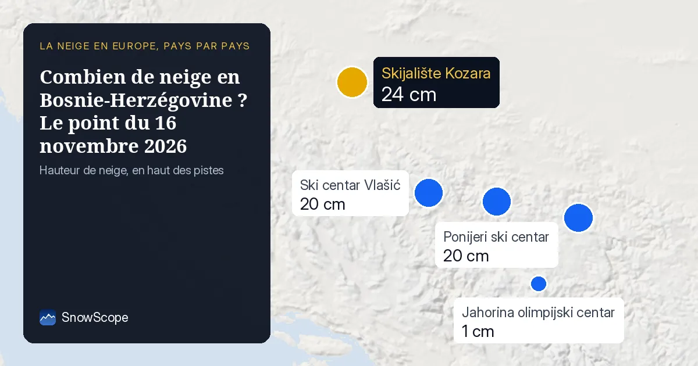

Combien de neige en Bosnie-Herzégovine ? Le point du 16 novembre 2026
La neige couvre environ 490 km² en Bosnie-Herzégovine ce 16 novembre, en baisse de 600 km² sur un jour. Environ 2 % des montagnes et collines cartographiées du pays sont couvertes.
Consultez les prévisions neige en temps réel pour Skijalište Kozara sur l'application SnowScopeHauteurs de neige, alertes poudreuse et carte 3D, gratuitement.
La couverture neigeuse du jour
La limite de l'enneigement se situe vers 2 000 m. Il y a une semaine, c'était 200 km² : la couverture a gagné 290 km².
| Station | Hauteur de neige | Neige fraîche, 72 h | Attendu, jours suivants | Sommet |
|---|---|---|---|---|
| Skijalište Kozara | 24 cm | 0 cm | 0 cm | 809 m |
| Igrišta olimpijski centar | 20 cm | 1 cm | 0 cm | 1 346 m |
| Ponijeri ski centar | 20 cm | 1 cm | 0 cm | 1 217 m |
| Ski centar Vlašić | 20 cm | 1 cm | 0 cm | 1 524 m |
| Jahorina olimpijski centar | 1 cm | 2 cm | 0 cm | 1 886 m |

Neige fraîche
Bjelašnica and Jahorina ont reçu le plus de neige fraîche en trois jours, jusqu'à 3 cm.
En bas, à mi-pente et en haut
L'altitude fait la différence : entre 500 et 1 000 m, moins de 1 cm en moyenne, 2 % couverts; entre 1 000 et 1 500 m, moins de 1 cm en moyenne, 2 % couverts; entre 1 500 et 2 000 m, moins de 1 cm en moyenne, 3 % couverts.
Sur le terrain
La neige recule vers le haut : misez sur les remontées d'altitude et évitez les pistes basses.
Avec de la neige annoncée, les prochains jours devraient encore améliorer la situation.
Où skier en premier
Skijalište Kozara est en tête avec 24 cm sur le haut du domaine.
Ensuite : Igrišta olimpijski centar (20 cm), Ponijeri ski centar (20 cm), Ski centar Vlašić (20 cm) et Jahorina olimpijski centar (1 cm).
Igrišta olimpijski centar a reçu 1 cm en trois jours et pourrait gagner 0 cm d'ici jeudi 19 novembre.
6 des 12 stations suivies en Bosnie-Herzégovine ont de la neige sur le haut du domaine.
Ce qui arrive
De la neige est prévue : jusqu'à 0 cm d'ici trois jours, jusqu'à 15 cm en sept jours.
Le lundi 23 novembre se détache, avec jusqu'à 11 cm en une journée.
La deuxième semaine ajoute jusqu'à 16 cm là où il neige le plus.
Conseils aux skieurs
- Au-dessus de la forêt, la neige peut être ventée : attention aux crêtes.
- Neige fraîche sur base froide : prudence dans les pentes raides.
- Les routes des stations d'altitude peuvent exiger pneus hiver ou chaînes.
À propos de ces chiffres
Les hauteurs de neige des stations sont la neige la plus épaisse sur le haut du domaine à la date indiquée ; ce sont des estimations pour une zone, pas une mesure en un point. Les prévisions peuvent changer. Consultez toujours le bulletin d'avalanche officiel avant le hors-piste.
Citer ce bulletin
Pour la recherche, l'enseignement ou la presse : chiffres et graphiques réutilisables librement sous CC BY 4.0 avec cette citation.
SnowScope (2026), Combien de neige en Bosnie-Herzégovine ? Le point du 16 novembre 2026, https://snowscope.app/blog/fr/2026/11/bosnia-and-herzegovina-snow-report-16-november-2026.html, consulté le 2026-11-16
SnowScope (Atlas Labs). (2026, November 16). Combien de neige en Bosnie-Herzégovine ? Le point du 16 novembre 2026. SnowScope snow reports. https://snowscope.app/blog/fr/2026/11/bosnia-and-herzegovina-snow-report-16-november-2026.html
BibTeX
@misc{snowscope2026bosniaandherzegovinasnow,
author = {{SnowScope (Atlas Labs)}},
title = {Combien de neige en Bosnie-Herzégovine ? Le point du 16 novembre 2026},
year = {2026},
month = nov,
howpublished = {\url{https://snowscope.app/blog/fr/2026/11/bosnia-and-herzegovina-snow-report-16-november-2026.html}},
note = {Published 2026-11-16 20:42 UTC; accessed 2026-11-16}
}· CC BY 4.0 · Méthodes, données et outils →
Skijalište Kozara : neige et température selon l'altitude, cet hiver vs l'hiver dernier (outils) →
Suivre Skijalište Kozara
Gratuit : un message quand la neige arrive, et la météo chaque matin.